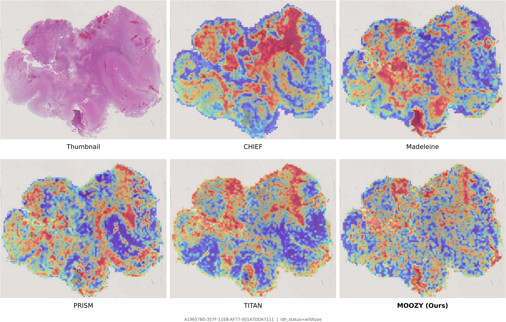
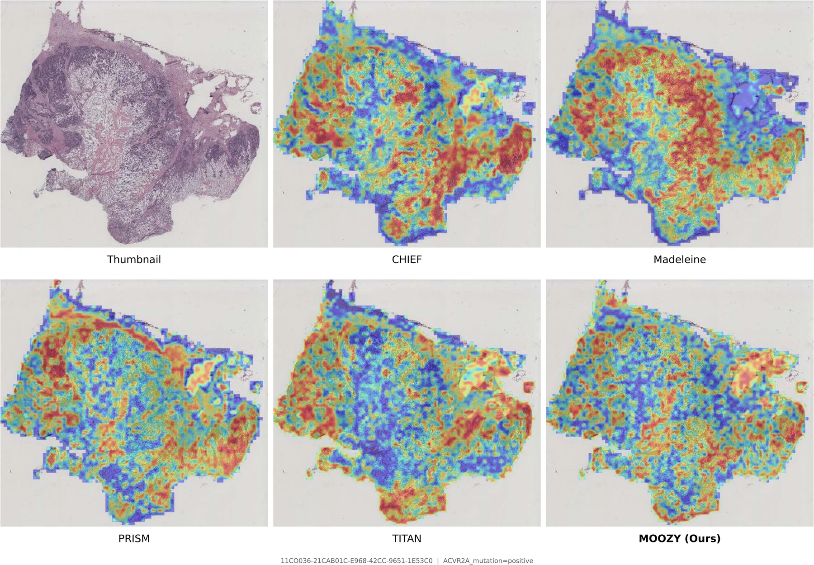
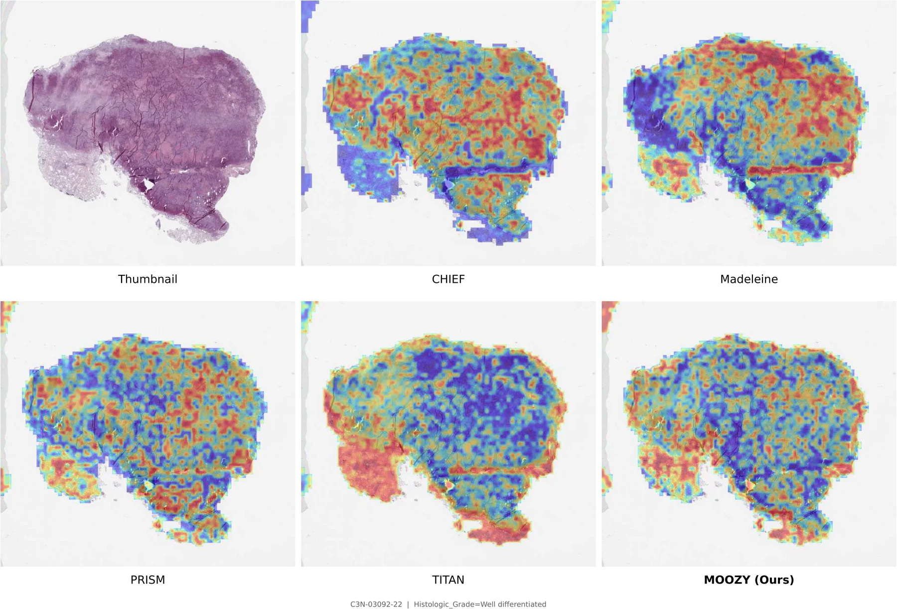
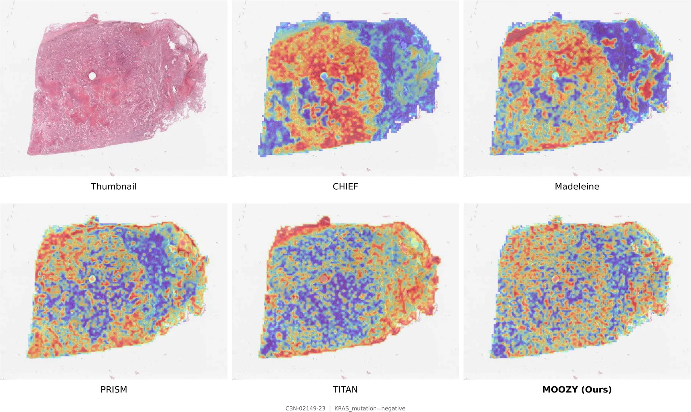
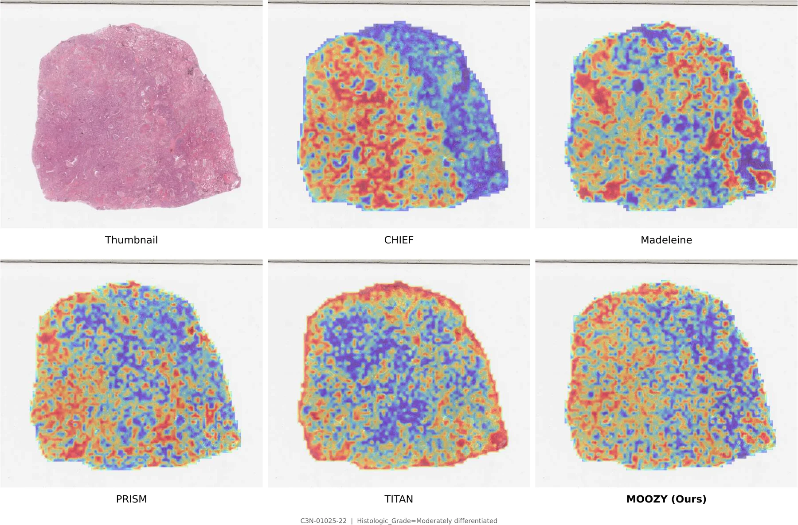

Where Does MOOZY Look?
A board-certified pathologist reviewed attention maps across 20 representative WSIs and five encoders. MOOZY achieved the lowest mean semantic gap score (1.00) and near-balanced tumor vs. non-tumor attention (2.63), suggesting broad, diagnostically relevant coverage.






Lung adenocarcinoma. MOOZY and TITAN: balanced, comprehensive coverage. CHIEF and Madeleine: cancer-biased with semantic gaps.